Compared to other catapults that preceded them, trebuchets were more accurate. They also launched projectiles with a lower trajectory and greater velocity, so were ideal for damaging walls rather than hurling missiles over them.
The first recorded trebuchets were invented in China around 300BC. These were traction trebuchets, where the energy required to propel the projectile was provided directly by a large group of men pulling down on ropes.
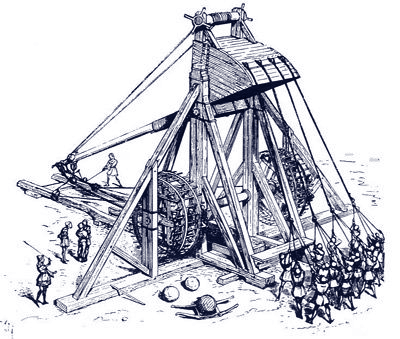Fig 1: A traction trebuchet.
The first records of the more famous counterweight trebuchet come from 12th century sources from Arabia and Byzantium. The new invention played a large role in the crusades and at the siege of Dover in 1217.
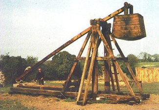Fig 2: A counterweight trebuchet.
During the siege of Stirling Castle in 1304, King Edward I ordered the creation of a trebuchet that was to be named Warwolf, believed to be the largest counterweight trebuchet ever built. It stood at between and 300 and 400 feet (that's somewhere between 150-200% the height of Durham cathedral!) and could hurl missiles weighing up to 300 pounds at 120mph. The sight of this behemoth under construction was enough to cause the Scots to try and surrender, although the siege went ahead and the weapon proceeded to level a large section of the external wall.
The counterweight trebuchet is described as a compound machine (meaning a combination of smaller simple machines working together). The energy of the projectile came from gravity. Potential energy would be stored by means of an extremely heavyweight box attached to the counterweight portion of the throwing arm by a hinged connection.
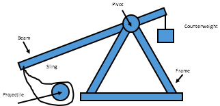Fig 3: Diagram of a counterweight trebuchet.
Here is a trebuchet in action:
In order to fire the trebuchet, the heavyweight box would be released and would fall under the force of gravity. This force on the weight causes rotational motion in the throwing arm around the axle. The arm connected to the sling is considerably longer than the counterweight arm. This increased the acceleration transmitted to the throwing portion of the arm and hence the sling. The sling contains the missile, passing onto it the forces generated in the lever arm. It alters the trajectory so that, once released, the projectile is traveling at the optimum angle and velocity to maximise the range.
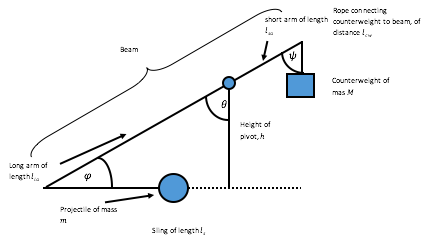Fig 4: Diagram showing the angles on a trebuchet
The basic function of the trebuchet is to convert potential energy into kinetic energy. From the physics of projectile motion, we can deduce the range R of a projectile launched with velocity u at angle θ:
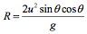From this we can derive that the maximum range of trebuchet is given by:
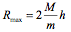where M is the mass of the counterweight and m is the mass of the projectile.
The most important factor in the firing of a trebuchet is the timing at which the control mechanism is released at the desired angle, as in the time at which ψ = φ. For this calculation we assume that the structure is totally fixed to the ground, all the contacts are well lubricated (frictionless), and that the mass of the beam is negligible. For simplicity, we will treat this as a trebuchet with the counterweight connected directly to the arm.
First, we denote kinetic energy T and potential energy V. The Lagrangian, L, is then given by:
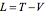Once we know the Lagrangian, we can use the Euler-Lagrange equation to find a solution describing the motion of a system. For each individual coordinate, denoted ci, the Euler-Lagrange equation is:
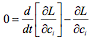Note that the symbol ∂ is used instead of d. This is a partial derivative, we are differentiating a multivariate function with respect to only one variable.
As an example, let's consider a simple pendulum:
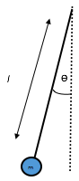Fig 5: A simple pendulum.
The kinetic and potential energy are given by:
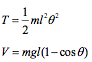The Lagrangian is therefore given by:
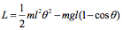Substituting this into the Euler-Lagrange equation gives us the solution to the pendulum's motion:
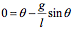Now we'll apply this to the counterweight trebuchet.
Firstly, we must resolve and differentiate the cartesian and polar coordinates in terms of the two angles, θ and φ, as shown in Figure 4 above:
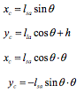By substituting these expressions into the cartesian expressions for kinetic and potential energy, we get the following equations:
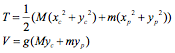From the diagram we can see that the initial conditions for the two angles, θ0 and φ0, are given by:
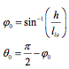Substituting these into the Euler-Lagrange equations (too complicated even for a WARNING:MATHS box) yields a 4th order differential equation that has to be solved numerically.
To understand the mechanics of trebuchets, we must use Lagrangian mechanics.The solution is a complicated differential equation, but the resulting motion is shown in the diagram below:
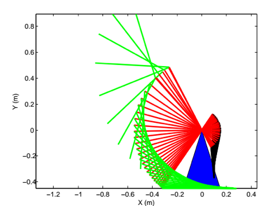Fig 6: Diagram showing the motion of a counterweight trebuchet. Red=arm, blue=supporting axle, black=counterweight, green=sling.